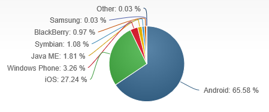
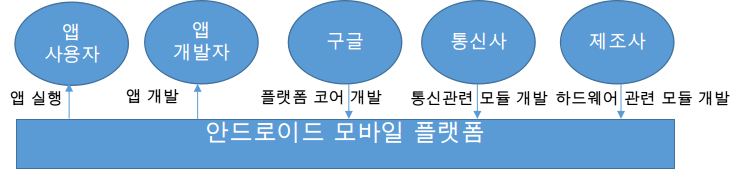
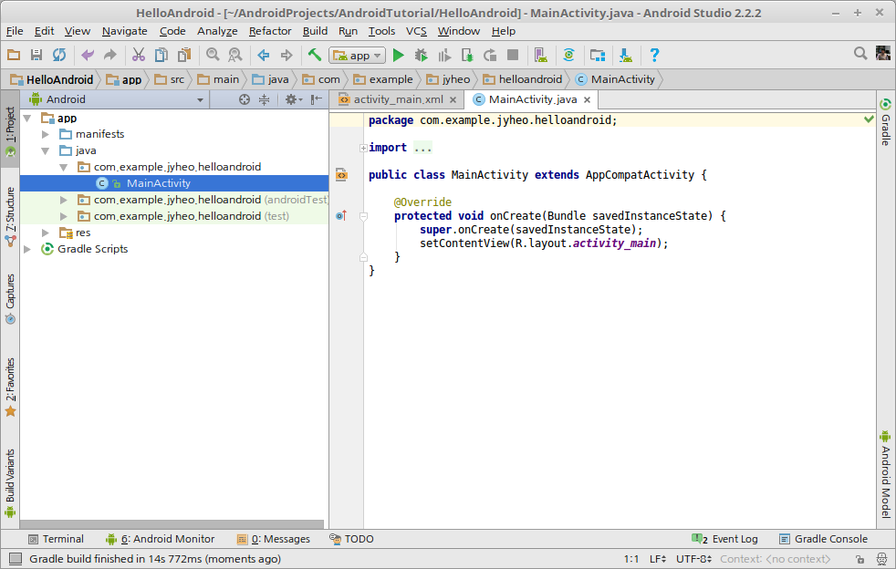
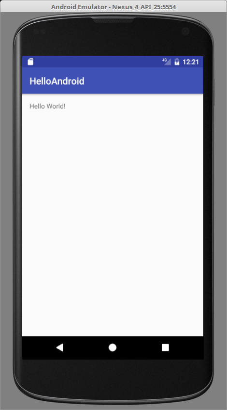
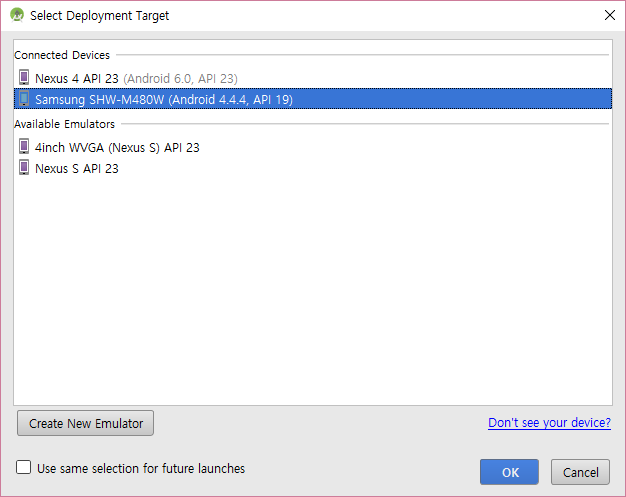
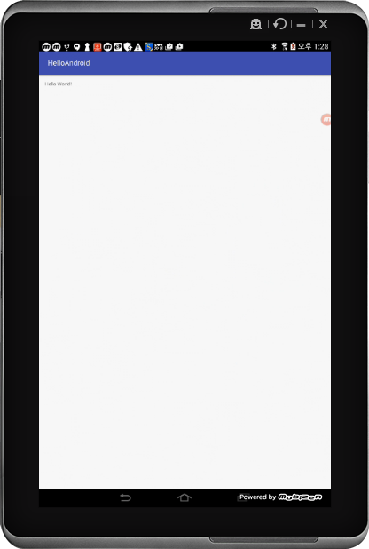

layout: true .top-line[] --- class: center, middle # 안드로이드 개요 --- ## Contents * 학습목표 * 모바일 운영체제의 일반적인 특징과 구글의 안드로이드의 주요 특징 및 전체적인 아키텍처를 알아본다. * 안드로이드 앱 개발을 위한 개발 환경을 설치한다. * 안드로이드 스튜디오를 이용하여 HelloAndroid 앱을 생성하고 실행해 본다. --- ## 모바일 환경 SW 개발 * 모바일 환경 * 스마트폰: 대포적인 모바일 디바이스 * 스마트폰을 이용하여 음악감상, 동영상 감상, 카메라 촬영 등의 다양한 작업이 가능 * 스마트폰 제조사가 아닌 제3자가 개발한 응용 프로그램(일명 앱)을 추가 설치하여 더욱 많은 기능 제공 * 다양한 모바일 디바이스: 태블릿, 웨어러블 디바이스(스마트 와치, 구글 글래스 등) * 모바일 환경 SW 개발의 발달 배경 * 작은 부피로도 많은 데이터의 저장이 가능한 메모리 * 프로세서 파워의 향상 * 배터리 효율의 향상 --- ## 모바일 운영체제 * 모바일 디바이스에서 실행되는 운영체제 * 모바일 하드웨어 자원을 직접 제어하고 관리하는 시스템 소프트웨어 * 데스크톱 운영체제에 비해 부피가 작은 하드웨어를 대상으로 함 * 모바일 운영체제의 종류 * 안드로이드 (Google) * iOS (Apple) * Window Phone (Microsoft)  .footnote[https://www.statista.com/statistics/266136/global-market-share-held-by-smartphone-operating-systems/] --- ## 안드로이드 개요 * 안드로이드 란? * 스마트폰과 태블릿 등의 모바일 디바이스를 위한 모바일 플랫폼 - 안드로이드 앱 실행을 위한 Linux 커널 기반 모바일 운영체제 - 안드로이드 앱 개발을 위한 강력한 개발 프레임워크(Libraries, Application Framework)  --- ## 안드로이드 개요 (계속) * 안드로이드 버전 * 2008년 9월 **A** ndroid 1.0 (API level 1)출시 * ... * 2015년 10월 **M** arshmallow 6.0-6.01 (API level 23) * 2016년 8월 **N** ougat 7.0-7.1.2 (API level 24-25) * 2017년 8월 **O** reo 8.0-8.1 (API level 26-27) * 2018년 8월 **P** ie 9.0 (API level 28) * 안드로이드 오픈 소스 프로젝트 * https://source.android.com/index.html ??? * 안드로이드의 코드명은 알파벳 순으로 A부터 시작하여 현재 P인 Pie까지 출시되었다. * 안드로이드는 오픈 소스 프로젝트이지만, 일반 삼성이나 LG와 같은 스마트폰 제조사에서는 안드로이드 오픈 소스를 기반으로 구글이 릴리즈하는 것을 사용한다. * 또한 구글 플레이등을 이용하기 위해서는 구글이 릴리즈하는 버전을 사용해야 한다. --- ## 안드로이드 아키텍처  .footnote[https://source.android.com/source/index.html] ??? * 안드로이드는 [https://ko.wikipedia.org/wiki/리눅스_커널)](리눅스 커널)을 기반으로 동작한다. * 리눅스 커널위에 커널과 분리되는 사용자 레벨 HAL계층이 있어서 제조사가 원하는 하드웨어 제어 소프트웨어를 GPL 라이선스를 침해하지 않고 추가할 수 있다. * 안드로이드 런타임은 안드로이드 바이트 코드를 실행하는 가상 환경으로 Dalvik을 사용하다가 롤리팝 이후부터 ART를 사용한다. * Native Libraries는 C/C++로 작성되어 컴파일된 라이브러리로 성능이 요구되는 멀티미디어, 데이터베이스(Sqlite), 웹 엔진(Webkit) 등이 있다. * Android Framework는 자바로 작성되어 안드로이드 런타임에 의해 실행되며 성능보다는 안드로이드 앱에 자바 언어로 API를 제공하여 응용 프로그램 개발을 쉽게 하는데 목적이 크다. * 응용 프로그램, 안드로이드와 함께 릴리즈 되기도하며 구글 플레이 스토어나 기타 앱 마켓(국내는 원스토어, 삼성 마켓)을 통해 추가로 앱을 설치할 수 있다. - 구글은 구글 플레이와 관련된 서브 시스템들을 제조사가 아닌 구글 플레이 스토어를 통해 업데이트하도록 하여 새로운 기능을 빠르게 출시할 수 있도록 하였다. --- ## 개발환경 설치 * Android Studio를 다운로드 하여 설치. * https://developer.android.com/studio/ ??? * 안드로이드는 기본적으로 자바를 이용하여 개발한다. * 성능이 요구되는 응용이나 라이브러리 개발을 위해 Native로 만들 수 있는 NDK도 제공한다. * 예전에는 JDK를 별도로 설치하였으나, 이제는 Android Studio 설치 파일에 OpenJDK가 포함되어 있어서 별도로 설치할 필요가 없다. --- ## HelloAndroid * 안드로이드 스튜디오를 이용하여 앱을 생성 1. Start a new Android Studio Project 2. New Proejct 위저드 * Application Name: HelloAndroid * Project location: 적당한 위치를 선택 3. Target Android Devices * Phone and Tablet 선택 * Minimum SDK: Android 5.1 (Lollipop) 4. Add an Activity to Mobile * Empty Activity 선택 5. Customize * 모두 선택한 상태로 Finish  --- ## helloandroid (계속) * 생성한 HelloAndroid를 에뮬레이터로 실행 1. Run > Run 'app' * 에뮬레이터 생성 1. Create New Virtual Device 2. Phone, Nexus 4 3. Pie x86 선택 4. Finish * 에뮬레이터 선택하고 실행  --- ## 실제 디바이스에서 실행하기 * 1. PC에 해당 디바이스용 USB 드라이버 설치 - https://developer.android.com/studio/run/oem-usb - Windows에서 개발할 경우만 USB 드라이버 설치가 필요함 * 2. 디바이스와 PC를 USB케이블로 연결하고, 설정 변경하기 - '환경설정(Settings) > 개발자 옵션(Developer Options)' 선택 후, **'USB 디버깅'** 허용 - (개발자 옵션이 안보이는 경우) '환경설정(Settings) > 디바이스 정보' 선택 후, 빌드번호 정보를 손가락으로 7번 터치하면, '환경설정>개발자옵션' 메뉴가 나타남 --- ## 실제 디바이스에서 실행하기 (계속) * 3. 툴바에서 실행() 버튼 클릭 후 나타나는 화면에서 연결된 실제 다비이스를 선택  ==> 